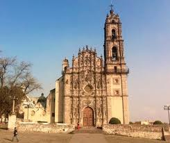

Museo Nacional del virreinato
El Museo Nacional del Virreinato es un recinto museográfico de México ubicado en el antiguo
Colegio de San Francisco Javier en Tepotzotlán. Está dedicado a la exhibición,
difusión e investigación del Virreinato de la Nueva España.
